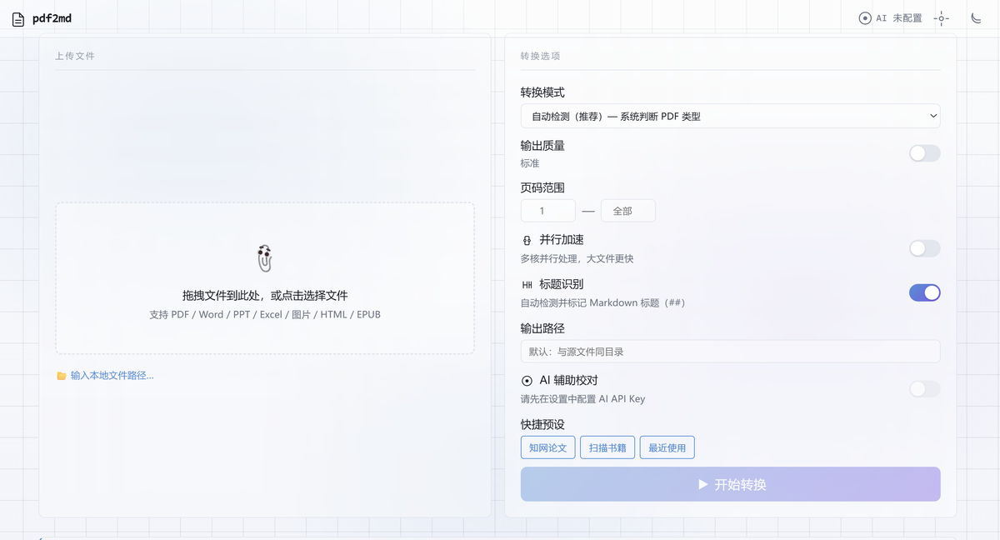

文字型管线：PyMuPDF → pymupdf4llm 单次提取 → CJK 空格归一化 → 标题验证 → 页眉清理
扫描版管线：逐页渲染 PNG → RapidOCR 识别 → 段落重建(IQR+连续性) → 表格几何检测 → 图片提取
后处理：模糊页眉匹配 + 全局内联替换 + 页码模式 + 跨页假标题检测
自动判断 PDF 类型（文字型/扫描版），无需手动选择，双管线无缝切换
扫描版 PDF 支持分段并行处理，大文件转换速度显著提升
支持接入 AI 模型对转换结果进行校对，修正 OCR 错误和格式偏差
Flask 提供本地 Web 界面，支持拖拽上传、实时进度、批量转换
智能检测 PDF 中的表格结构，转换后保留 Markdown 表格格式
一键打包为独立 EXE，无需安装 Python 环境，可直接分发使用
MD转换器是 Python 本地工具，需要后端运行环境，无法提供在线演示。
但您可以从截图和架构介绍中了解项目的完整设计与技术细节。
源码和详细文档可在 GitHub 仓库查看。